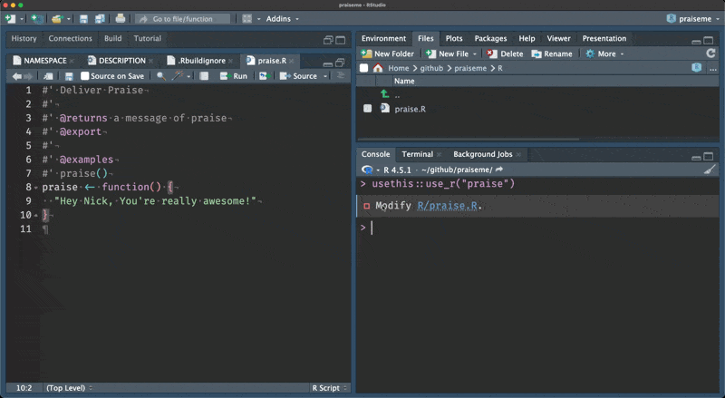

[1] "Hey, you're really great!"WOMBAT
Statistical Consultant
2025-09-28
praiseme package (modelled on the praise package).usethis and devtools.roxygen2.testthat to verify package functionality.Inspiration: Hilary Parker’s, “Writing an R package from scratch”.
Which focussed on creating a package, cats (demo)
So accessible
Encouraged iteration
praise() function isn’t loaded with library(praiseme){roxygen2}{roxygen2}#' @tagYou can think of roxygen as special comments - notice that they are really similar to R comments! It is the comment, # plus the single quote, ' - so #'. You can add special labels with @. In our case, we will just look at the ones that were created with the insert roxygen skeleton helper. We will look at more of these soon. But if you want to see all of them, see the roxygen2 documentation.
So we populate the roxygen skeleton, like so:
#' Deliver Praise
#'
#' @returns a message of praise
#' @export
#'
#' @examples
#' praise()
praise <- function() {
"Hey Nick, You're really awesome!"
}These are special comments that will ultimately end up as documentation for our code.
Let’s talk about what these parts do.
@title Deliver Praise”, but roxygen is clever enough that it knows the top line is a title. If you want to be really explicit, you can do #' @title Deliver Praise@returns tells the user what this returns@export tells R to export this function to make it available to the user (this is what we are after!)We then call document(), which gives us the output:
ℹ Updating praiseme documentation
ℹ Loading praiseme
Writing NAMESPACE
Writing praise.RdThis allows us to look at the documented function with ?praise.
Which will tell us the following:
ℹ Rendering development documentation for "praise"And here’s a GIF of the action:
These two bits of output here:
Writing NAMESPACE
Writing praise.RdTell us the function has been added to the NAMESPACE file:
# Generated by roxygen2: do not edit by hand
export(praise)And also the praise.Rd file is added in man/praise.Rd, which is a markup language that is similar to LaTeX
% Generated by roxygen2: do not edit by hand
% Please edit documentation in R/praise.R
\name{praise}
\alias{praise}
\title{Deliver Praise}
\usage{
praise()
}
\value{
a message of praise
}
\description{
Deliver Praise
}
\examples{
praise()
}So to recap:
praise function#' @export linedevtools::document()praise function in NAMESPACEman/praise.Rdlibrary(praiseme)Some history on NAMESPACE and .Rd files
Back in the day, you used to need to write these things by hand. The idea with roxygen is that you can write your documentation for your function with the function itself! And then we use these R functions and tools to help facilitate the process of writing the NAMESPACE, and also generating the praise.Rd code.
Why do we need to @export the code?
One of the reasons we don’t want to make all of the code that you wrote available to the user is that if every package we loaded also loaded all objects created in all of the R package, then there’s a chance it might start to interfere with someone elses code. We want to avoid that by being really specific about which functions are available to the user.
library(praiseme)Now let’s try this:
Does this deliver your praise?
Now let’s next explore expanding praise by adding more flexibility to our praise function so you can praise someone else!